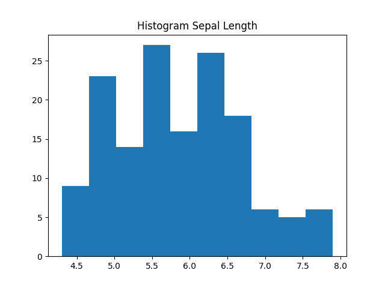
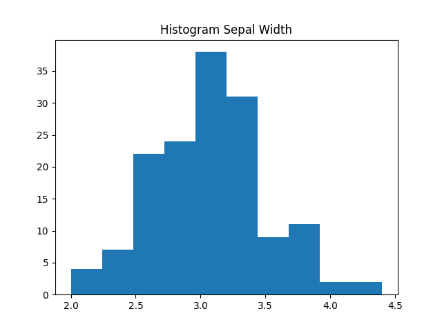
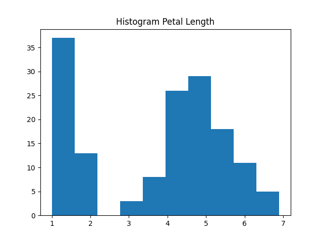
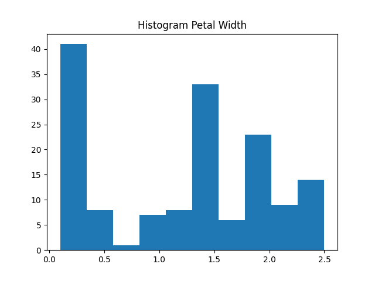
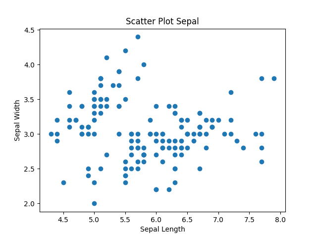
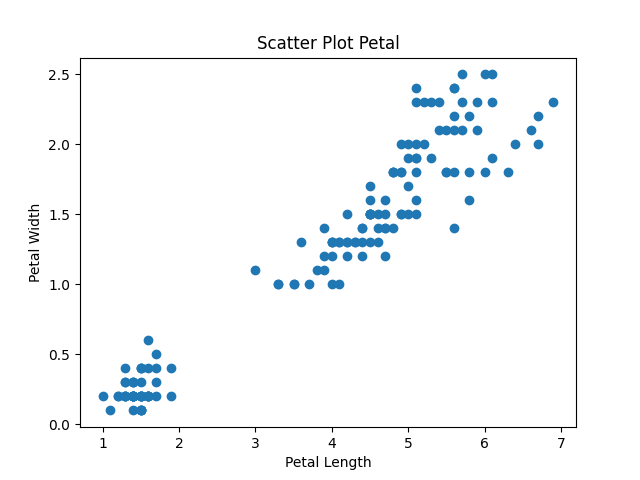
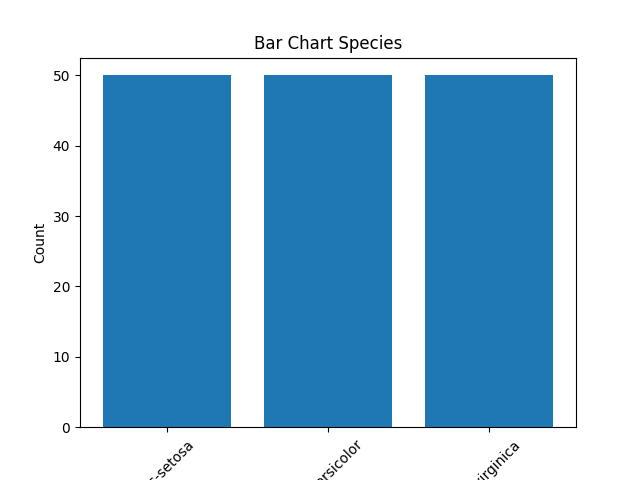
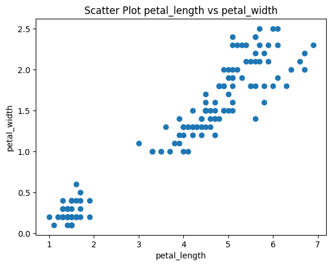

Visualisasi Data#
Histogram#
Salah satu cara untuk kita mengetahui distribusi data ialah menggunakan Histogram, Histogram ialah grafik yang digunakan untuk menampilkan distribusi frekuensi data numerik dalam bentuk batang (bar) yang saling berdempetan. Histogram menunjukkan bagaimana data tersebar dalam beberapa interval nilai yang disebut bin atau kelas.
Dalam histogram, sumbu horizontal (X) menunjukkan rentang nilai atau interval data, sedangkan sumbu vertikal (Y) menunjukkan jumlah frekuensi atau banyaknya data dalam setiap interval tersebut. Berbeda dengan diagram batang biasa, pada histogram tidak terdapat jarak antar batang karena data yang ditampilkan bersifat kontinu. Untuk Histogram tiap attribute sebagai berikut:
import matplotlib.pyplot as plt
import pandas as pd
iris = pd.read_csv("IRIS.csv")
plt.figure()
plt.hist(iris['sepal_length'], bins=10)
plt.title("Histogram Sepal Length")
plt.savefig("Histogram_Sepal_Length.png")
plt.close()
plt.figure()
plt.hist(iris['sepal_width'], bins=10)
plt.title("Histogram Sepal Width")
plt.savefig("Histogram_Sepal_Width.png")
plt.close()
plt.figure()
plt.hist(iris['petal_length'], bins=10)
plt.title("Histogram Petal Length")
plt.savefig("Histogram_Petal_Length.png")
plt.close()
plt.figure()
plt.hist(iris['petal_width'], bins=10)
plt.title("Histogram Petal Width")
plt.savefig("Histogram_Petal_Width.png")
plt.close()
---------------------------------------------------------------------------
ModuleNotFoundError Traceback (most recent call last)
Cell In[1], line 1
----> 1 import matplotlib.pyplot as plt
2 import pandas as pd
4 iris = pd.read_csv("IRIS.csv")
ModuleNotFoundError: No module named 'matplotlib'
from IPython.display import Image, display
files = [
'Histogram_Sepal_Length.png',
'Histogram_Sepal_Width.png',
'Histogram_Petal_Length.png',
'Histogram_Petal_Width.png'
]
for file in files:
display(Image(file))




Histogram#
Pengertian#
Histogram adalah grafik yang digunakan untuk melihat distribusi frekuensi dari suatu variabel numerik. Histogram membantu kita memahami:
Pola penyebaran data
Rentang nilai
Apakah data cenderung normal, miring (skewed), atau memiliki lebih dari satu kelompok
Analisis Histogram Dataset Iris#
Histogram Sepal Length
Nilai tersebar antara sekitar 4.3 – 7.9 cm
Distribusi relatif merata
Terjadi overlap antar spesies. Artinya: Sepal length kurang efektif untuk membedakan spesies secara jelas.
Histogram Sepal Width
Rentang sekitar 2.0 – 4.4 cm
Distribusi cukup terkonsentrasi di tengah (sekitar 2.7 – 3.3 cm)
Overlap antar spesies cukup besar. Artinya: Sepal width juga bukan fitur terbaik untuk klasifikasi.
Histogram Petal Length
Terlihat dua kelompok besar
Kelompok kecil (sekitar 1–2 cm) → biasanya Iris-setosa
Kelompok besar (3–7 cm) → versicolor dan virginica
Distribusi lebih terpisah. Artinya: Petal length sangat baik untuk membedakan spesies.
Histogram Petal Width
Pola mirip dengan petal length
Terlihat pemisahan yang cukup jelas antara kelompok kecil dan besar. Artinya: Petal width juga fitur penting dalam klasifikasi.
Kesimpulan Histogram#
Fitur petal length dan petal width lebih informatif dibandingkan sepal length dan sepal width dalam membedakan spesies bunga Iris.
Scatter Plot#
Pengertian#
Scatter plot digunakan untuk melihat hubungan (korelasi) antara dua variabel numerik. Grafik ini membantu kita:
Melihat pola hubungan
Mengetahui apakah ada korelasi positif/negatif
Mengidentifikasi pengelompokan (cluster)
Analisis Scatter Plot Dataset Iris#
Scatter Plot Sepal Length vs Sepal Width
Titik data menyebar cukup luas
Tidak terlihat pemisahan yang jelas antar spesies
Korelasi lemah. Artinya: Kombinasi dua fitur ini kurang optimal untuk klasifikasi.
Scatter Plot Petal Length vs Petal Width
Terlihat pola linear (korelasi positif)
Titik data membentuk kelompok yang lebih jelas
Iris-setosa terpisah jauh dari dua spesies lainnya. Artinya: Kombinasi petal length dan petal width sangat efektif untuk pemodelan klasifikasi.
Kesimpulan Umum#
Berdasarkan histogram dan scatter plot:
Fitur petal length dan petal width memiliki daya pisah paling baik.
Fitur sepal length dan sepal width memiliki overlap yang tinggi.
Scatter plot menunjukkan adanya korelasi positif antara petal length dan petal width.
Dataset Iris cocok digunakan untuk pembelajaran algoritma klasifikasi seperti:
KNN
Decision Tree
Naive Bayes
import matplotlib.pyplot as plt
import pandas as pd
iris = pd.read_csv("IRIS.csv")
plt.figure()
plt.scatter(iris['sepal_length'], iris['sepal_width'])
plt.xlabel("Sepal Length")
plt.ylabel("Sepal Width")
plt.title("Scatter Plot Sepal")
plt.savefig("Scatter_Plot_Sepal.png")
plt.close()
plt.figure()
plt.scatter(iris['petal_length'], iris['petal_width'])
plt.xlabel("Petal Length")
plt.ylabel("Petal Width")
plt.title("Scatter Plot Petal")
plt.savefig("Scatter_Plot_Petal.png")
plt.close()
species_counts = iris['species'].value_counts()
plt.figure()
plt.bar(species_counts.index, species_counts.values)
plt.xlabel("Species")
plt.ylabel("Count")
plt.title("Bar Chart Species")
plt.xticks(rotation=45)
plt.savefig("Bar_Chart_Species.png")
plt.close()
from IPython.display import Image, display
files = [
'Scatter_Plot_Sepal.png',
'Scatter_Plot_Petal.png',
'Bar_Chart_Species.png'
]
for file in files:
display(Image(file))



import pandas as pd
import matplotlib.pyplot as plt
df=pd.read_csv("IRIS.csv")
print("Korelasi petal_length dan petal_width: ",round(df['petal_width'].corr(df['petal_length']), 2))
plt.scatter(df['petal_length'], df['petal_width'])
plt.xlabel('petal_length')
plt.ylabel('petal_width')
plt.title('Scatter Plot petal_length vs petal_width')
plt.show()
Korelasi petal_length dan petal_width: 0.96

Outlier#
Outlier adalah nilai data yang memiliki karakteristik berbeda secara signifikan dibandingkan sebagian besar data lainnya dalam suatu dataset. Outlier sering disebut sebagai data pencilan karena posisinya berada di luar pola umum distribusi data.
Secara umum, outlier dapat berupa:
Nilai yang terlalu tinggi (extreme high value)
Nilai yang terlalu rendah (extreme low value)
Data yang tidak mengikuti pola atau struktur mayoritas data
Keberadaan outlier dapat mempengaruhi hasil analisis, terutama pada metode statistik dan algoritma machine learning, karena dapat menyebabkan bias atau distorsi pada model.
import pandas as pd
import numpy as np
from sklearn.neighbors import LocalOutlierFactor
df = pd.read_csv("IRIS.csv")
X = df.select_dtypes(include=[np.number]).values
lof = LocalOutlierFactor(
n_neighbors=20,
contamination=0.10,
metric='euclidean'
)
y_pred = lof.fit_predict(X)
df['LOF_Score'] = -lof.negative_outlier_factor_
df['Outlier'] = y_pred
outlier_lines = list(df[df['Outlier'] == -1].index + 1)
print("Total Outlier:", len(outlier_lines))
print("Nomor Baris Outlier:")
print(outlier_lines)
Total Outlier: 15
Nomor Baris Outlier:
[14, 15, 16, 34, 42, 58, 61, 94, 99, 106, 107, 118, 119, 123, 132]